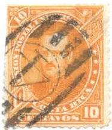
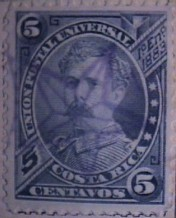
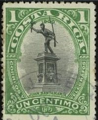
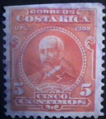

Return To Catalogue - Costa Rica 1862 issue - Costa Rica miscellaneous
Note: on my website many of the
pictures can not be seen! They are of course present in the
catalogue;
contact me if you want to purchase it.
For the 1862 issue of Costa Rica 1862, click here.

1 c green 2 c red 5 c lilac 10 c yellow 40 c blue
These stamps have perforation 12.
Value of the stamps |
|||
vc = very common c = common * = not so common ** = uncommon |
*** = very uncommon R = rare RR = very rare RRR = extremely rare |
||
| Value | Unused | Used | Remarks |
| 1 c | * | * | |
| 2 c | * | * | |
| 5 c | * | * | |
| 10 c | *** | *** | |
| 40 c | * | * | |
Fiscal stamps 'TIMBRE PROPORTIONAL' surcharged 'CORREOS'

(Vertical surcharge)
1 c red 5 c brown
The 1 c exists with vertical surcharge (instead of horizontal).
Value of the stamps |
|||
vc = very common c = common * = not so common ** = uncommon |
*** = very uncommon R = rare RR = very rare RRR = extremely rare |
||
| Value | Unused | Used | Remarks |
| 1 c | c | * | |
| 5 c | c | * | |
Some fiscal stamps were used as postage stamps without the overprint 'CORREOS': 1 c red and 2 c blue. Value: *.
Fournier forgery of the 10 c value in blue with printed
perforation. Image obtained from a 'Fournier Album of Philatelic
Forgeries'. Fournier probably only used this forgery to
illustrate his pricelists, and not to deceive collectors.
(Reduced size)
1 c brown 2 c blue 5 c orange 5 c violet (different design) 10 c yellow 10 c brown (different design) 20 c green 50 c red 1 P blue 2 P lilac 5 P green 10 P black
Value of the stamps |
|||
vc = very common c = common * = not so common ** = uncommon |
*** = very uncommon R = rare RR = very rare RRR = extremely rare |
||
| Value | Unused | Used | Remarks |
| 1 c | c | * | 1889 |
| 2 c | c | * | 1889 |
| 5 c orange | * | * | 1889 |
| 5 c violet | ** | * | 1887 |
| 10 c yellow | ** | * | 1887 |
| 10 c brown | c | * | 1889 |
| 20 c | c | * | 1889 |
| 50 c | * | * | 1889 |
| 1 P | * | * | 1889 |
| 2 P | *** | *** | 1889 |
| 5 P | *** | *** | 1889 |
| 10 P | R | R | 1889 |
Fiscal stamps 'TIMBRE PROPORTIONAL' surcharged 'CORREOS' horizontally.

5 c brown 10 c blue
Value of the stamps |
|||
vc = very common c = common * = not so common ** = uncommon |
*** = very uncommon R = rare RR = very rare RRR = extremely rare |
||
| Value | Unused | Used | Remarks |
| 5 c | c | * | |
| 10 c | c | * | |
Some typical 'Star' cancels:

Some fiscal stamps were used as postage stamps without the overprint 'CORREOS': 5 c brown and 10 c blue. Value: *.
Postal stationary in a similar design, 5 c blue, reduced size.
Postal stationary exists in a similar, but slightly different design: 5 c blue and 10 c orange.


(Reduced size)
1 c green 2 c orange 5 c lilac 10 c green 20 c red 50 c blue 1 P green on yellow 2 P brown on grey 5 P blue on blue 10 P brown on yellow
A typical 'concentric rings' and 'Davidstar' cancel:



1 c green and black (statue of Juan Santamaria) 2 c red and black (Juan Mora) 4 c lilac and black (Jose M.Canas) 5 c blue and black (Puerto Limon) 6 c olive and black (Julian Volio) 10 c brown and black (Braulio Carillo) 20 c red and black (theatre building) 25 c violet and black (Eusebio Figureoa) 50 c brown and blue (Jose M.Castro) 1 Col brown and black (Birris bridge) 2 Col red and grey (Juan Rafael Mora) 5 Col brown and black (Jesus Jimenez) 10 Col green and red (arms) Surcharged in fancy letters 'UN CENTIMO' on 20 c red and black Overprinted '1911' 1 c green and black (overprint red) Overprinted 'Habilitado 1911'

4 c lilac and black
Only the 2 c exists with inverted center (very rare).
(Reduced sizes)
1 c brown and black 2 c green and black 4 c red and blue 5 c yellow and blue 10 c blue and black 20 c green and black 25 c violet and black 50 c lilac and blue 1 Col brown and black 2 Col red and black
Stamps with horizontal bars are remainders that have been cancelled in this way. In many cases, these remainders are more common than the 'normal' stamps.
Overprinted '1911'


1 c brown and black 2 c green and black (overprint large black '** 1911 **') 2 c green and black (overprint small red '* 1911 *') Overprinted 'Habilitado 1911'


With remainder cancel: 5 parallel lines
5 c yellow and blue (overprint blue) 10 c blue and black

Forged black and red '1911' overprint on 2 c


(Reduced size)
1 c brown (soldier) 2 c green 4 c red 5 c orange 10 c blue 20 c olive 25 c violet 1 C brown Surcharged '+ 5 c' on 5 c orange Overprinted 'COMPRE UD. CAFE DE COSTA RICA' in a circle 5 c orange (1923)

A bogus red airmail overprint presumably to be from 1924 on the 1
c value. This bogus issue was prepared in Paris. The overprint
also exists inverted.


Similar stamp with forged inverted 'Correos' overprint

Misprint' Coereos' instead of 'Correos'
'Correos Un centimo' (red or black) on 10 c blue; value red overprint:c, black overprint:RR 'Correos Un centimo' on 25 c violet; value: c 'Correos Un centimo' (blue) on 50 c red; value: * 'Correos Un centimo' (red) on 1 C brown; value: * 'Correos Un centimo' (blue) on 5 C red; value: ** 'Correos Un centimo' (red) on 10 C brown; value: ** 'Correos Dos centimos 2' on 5 c yellow; value: *** 'Correos Dos centimos 2' (red) on 10 c blue; value: RR 'Correos Dos centimos 2' on 50 c red; value: * 'Correos Dos centimos 2' on 1 C brown; value: * 'Correos Dos centimos 2' on 2 C red; value: * 'Correos Dos centimos 2' on 5 C green; value: * 'Correos Dos centimos 2' on 10 C brown; value: * 'Correos 5 5 centimos'(blue) on 5 c orange; value: c
Various misprints exist 'Coereos' instead of 'Correos'; inverted overprints and double overprints.
Similar overprint of 1929: 'CORREOS 13 CENTAVOS' on 40 c green,
inverted and non-inverted overprint, genuine? A 'CORREOS 5
CENTIMOS' overprint was also applied to a 2 c red telegraph stamp
(the '5' exists in five types).
I've also seen a telegraph stamp (50 c blue) with overprint 'IMPORTACION LICORES 10 Cts. 3/4 LITRO'.
5 c blue and black (exists in tete-beche).
15 c violet With overprint 'CORREOS 1922' 15 c violet
2 c orange and black 3 c green and black 5 c violet 6 c red and black 15 c blue and black 30 c brown and black
With inverted overprints
1 c brown (blue overprint), 2 c green (red overprint), 4 c red, 5 c orange, 10 c blue (red or blue overprint), 15 c violet (gold overprint).
The values 1 c, 4 c, 10 c and 15 c exist with inverted overprint (see image above).


{kind=link}
{kind=link}
{kind=link}